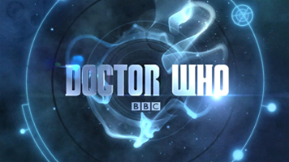

Splatoon 2 is a team-based third-person shooter video game developed and published by Nintendo for the Nintendo Switch. It is the sequel to the 2015 Wii U title Splatoon, and includes a story-driven single-player mode, as well as an online multiplayer mode that features up to eight players in online four-versus-four matches. The game was announced in January 2017, and released worldwide on July 21, 2017.
Let's be honest here. I am not a big fan of shooters, except for a few selection like 'Counter-Strike', 'Team Fortress 2' and 'Overwatch'. I was first skeptical of this game, since I never tried the prequel (which it's on the console I never owned, Wii U.), but after competing during the Testfire Splatfest back in July (one week before release) I was sold. (Go #TeamIceCream!)
If only most people own a switch, I won't have a hard time looking for a squid team.
Owl City is an American electronica project created in 2007 in Owatonna, Minnesota; it is one of several projects by singer, songwriter and multi-instrumentalist Adam Young. Young created the project while experimenting with music in his parents' basement.
I first discovered him in the internet with his song 'Designer Skyline'. I fell in love with that song but at that time I have no idea who Adam is. I learned he releases his songs under the moniker 'Owl City' when I heard 'Fireflies' for the first time. Ever since, it might seem that I am a big fan. A hootowl, so to speak. Most of my taste in music revolves around him.
Here is one of his songs, 'Designer Skyline':
And here's my all-time favorite, 'Wolf Bite':
The Nintendo Switch is the seventh major video game console developed by Nintendo. Known in development by its codename NX, it was unveiled in October 2016 and was released worldwide on March 3, 2017. Nintendo considers the Switch a "hybrid" console: it is designed primarily as a home console, with the main unit inserted onto a docking station to connect to a television.
I love Nintendo. Probably everyone knows this. Ranging from merchandise, to the small scanning figurines called 'amiibo', some will call me the Nintendo Freak. Despite being a big fan, all I have managed to own are their handhelds - since I tend to game more on the go than staying in one place. The Switch is like a dream for me because while I still love handheld gaming, I miss console-quality games. It also makes sense since I don't have a dedicated PC for games anymore. I think I should stop gushing before this'll become the longest section.
Doctor Who is a British science-fiction television programme produced by the BBC since 1963. The programme depicts the adventures of a Time Lord called "the Doctor", an extraterrestrial being from the planet Gallifrey. The Doctor explores the universe in a time-travelling space ship called the TARDIS.
I discovered Doctor Who around 2013. I was bored and I realized I'm not watching TV shows unlike other people, so I started watching random shows. I also discovered 'Supernatural' and 'Sherlock' this way, actually.
One of my favorite Doctors is the 10th Doctor - which is also my first Doctor, followed by Nine. I have been watching ever since.

Xenoblade Chronicles is an action role-playing game developed by Monolith Soft and published by Nintendo for the Wii. Initially released in Japan in 2010, and was later released in Europe in 2011 and in North America in 2012. A port for the New Nintendo 3DS was released worldwide in 2015.
I can hear you - another game?? - Yo, the reason Xenoblade is here in the first place is because of it's soundtrack! The music in this game are phenominal, and there's a lot of memorable tracks. Here's my personal favorite, 'Gaur Plains':
Big Hero 6 is a 2014 American 3D computer-animated superhero film produced by Walt Disney Animation Studios and released by Walt Disney Pictures. Loosely based on the superhero team of the same name by Marvel Comics, the film is the 54th Disney animated feature film.
Hey, hey. Believe it or not, I'm more of a bookish person - I prefer reading a book version/comic version (in this movie's case) rather than watching. However! This is an exception. The soundtrack was awesome, I even have some favorites there. Story is amazing, heart-breaking, and overall... fun! I think I have watched this 5 times now. I rarely re-watch movies
Lucina (ルキナ Rukina) is a playable character and one of the three main protagonists (tritagonist) from Fire Emblem Awakening.
Okay, so I have a lot of favorite characters in different media. Movies, TV shows, Books, Games... but no-one can top Lucina. At first, you may see her as an infant to Prince Chrom, but as the game progresses you get to learn that 'Marth' is actually her in the future, where the world was overrun by the evil dragon Grima. She is tasked to go back to the past and prevent the bad future by seeking out and kill the vessel of Grima, which at the latter part of the game, you find that it's you (the Avatar/Protagonist) she's looking for. In my playthrough of the game, Lucina married my Avatar (who was male during the course of the story) and had to see the heart-breaking part of the story.
Fire Emblem is a cool game on it's own, and is my top favorite series in par with Pokemon. Which leads to the last one...
Fire Emblem is a tactical role-playing game franchise developed by Intelligent Systems and published by Nintendo. First produced and published for the Family Computer, the series consists of twelve original games, three remakes, and two spin-off, that are playable across multiple game systems.
Here we are! As I said previously that I really don't like shooters - you might have wondered so which is your favorite genre? Lookie here, I like tactical games! Since I like RPGs, it feels like a bonus since this game is a mix of tactics and role-playing. I'm ready for the next Fire Emblem game! My body is Reggie ready!
Also, bonus track: